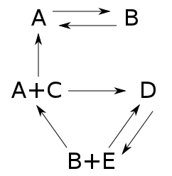

- a set of species $\mathcal{S} = \{A, B, C, D, E\}$
- a set of complexes $\mathcal{C} = \{A, B, A + C, D, B + E\}$
- a set of reactions $\mathcal{R} = \{A \rightarrow B, B \rightarrow A, A + C \rightarrow D, ...\}$
REACTIONATOR
Theoretical Background
The calculation algorithm is derived from
the chemical reaction network theory. Consider the following chemical reaction network:

It is defined by:
Based on the species in a complex and their corresponding stoichioemtric factors we can define vectors. Consider the reaction $A + C \rightarrow D$. We make the following associations:
$$y = A + C = \begin{pmatrix}1\\0\\1\\0\\0\end{pmatrix}$$ and $$y' = D = \begin{pmatrix}0\\0\\0\\1\\0\end{pmatrix}$$
placeholder